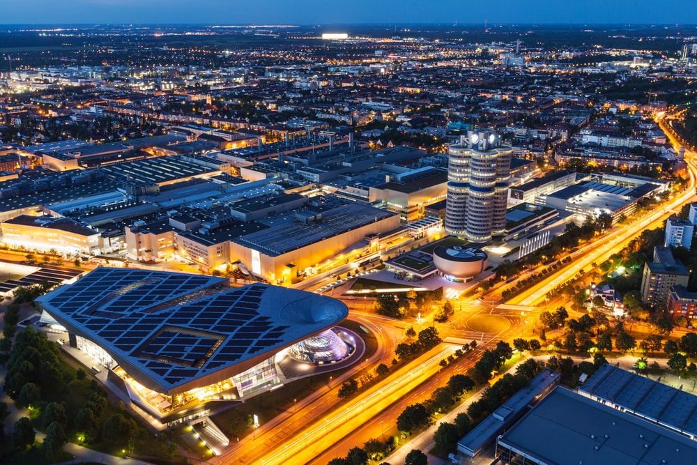

NOTRE compagnie de voiture
un peu de musée
Le musée BMW est un musée automobile de l'histoire de BMW situé près de l'Olympiapark à Munich, en Allemagne. Le musée a été créé en 1973, peu après l'ouverture des Jeux olympiques d'été. De 2004 à 2008, il a été rénové dans le cadre de la construction de la BMW Welt, directement en face. Le musée rouvert le 21 juin 2008 Sommaire
BMW
L'exposition "Time Horizon (s)"
e musée montre le développement technique de BMW tout au long de l'histoire de l'entreprise. Il contient des moteurs et des turbines, des avions, des motos et des véhicules dans une pléthore de variations possibles. En plus des modèles actuels, il y a des études conceptuelles, même futuristes, des 20 dernières années. L'utilisation d'écouteurs et un éclairage intelligent, souvent indirect, confèrent à l'exposition une atmosphère largement paisible. L'accent est mis sur le développement technique et les avantages de la modernité. Le bâtiment se fond dans le concept d'exposition.